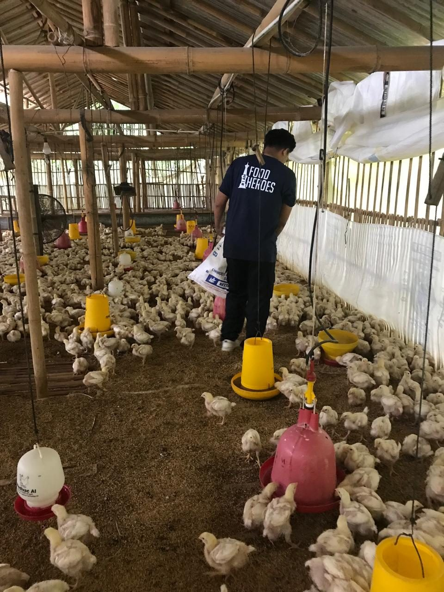
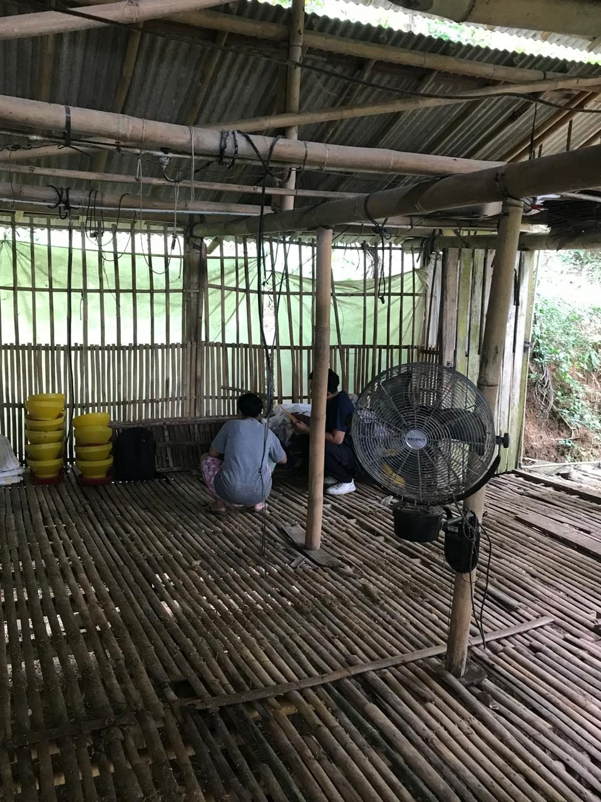
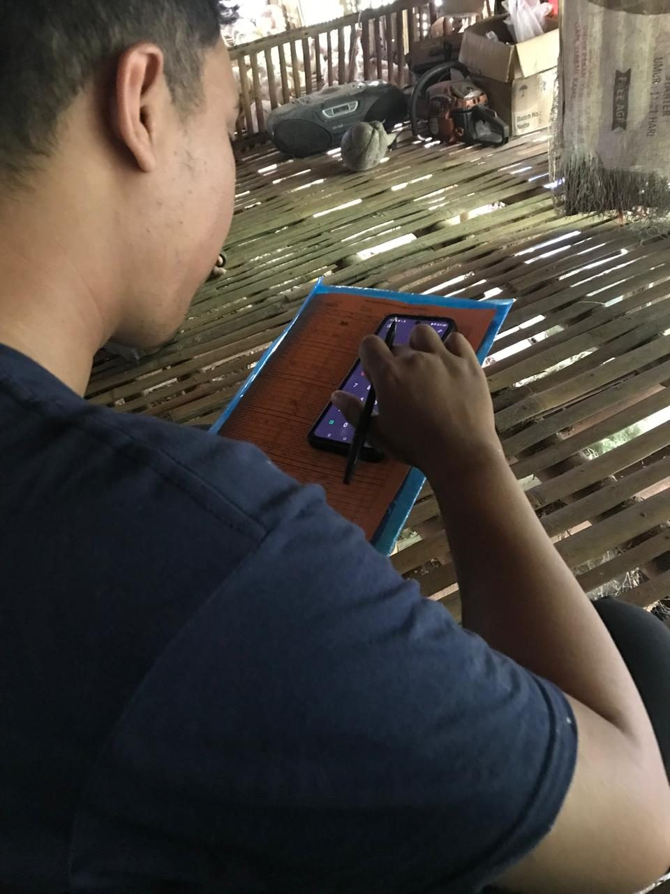
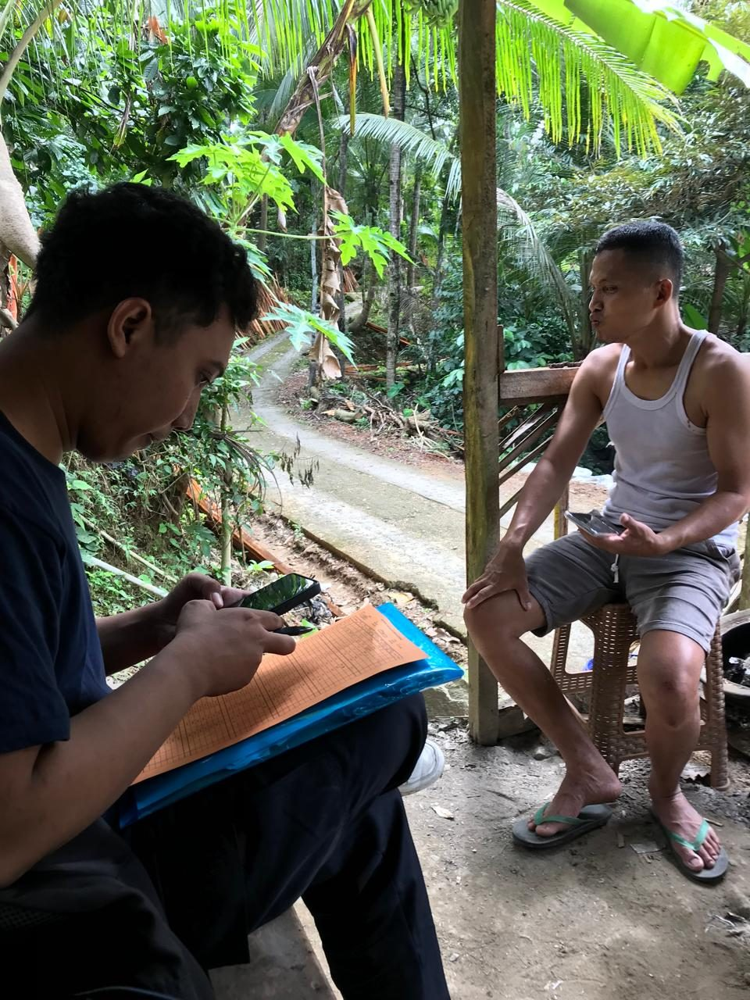
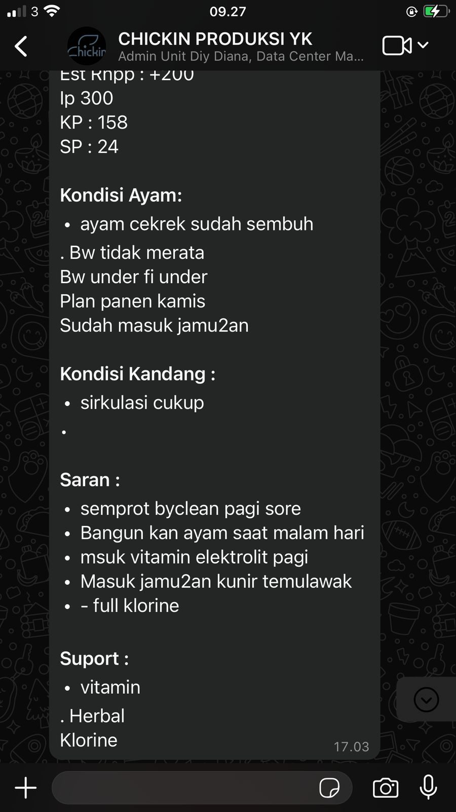
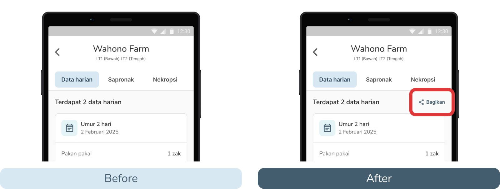
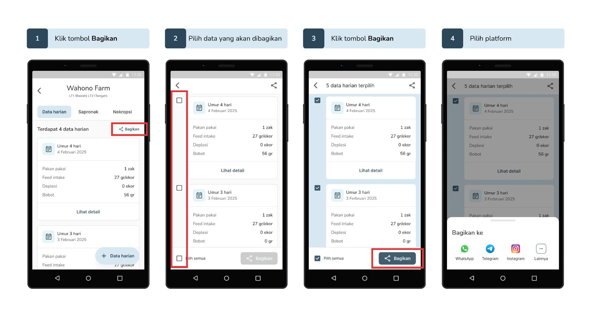
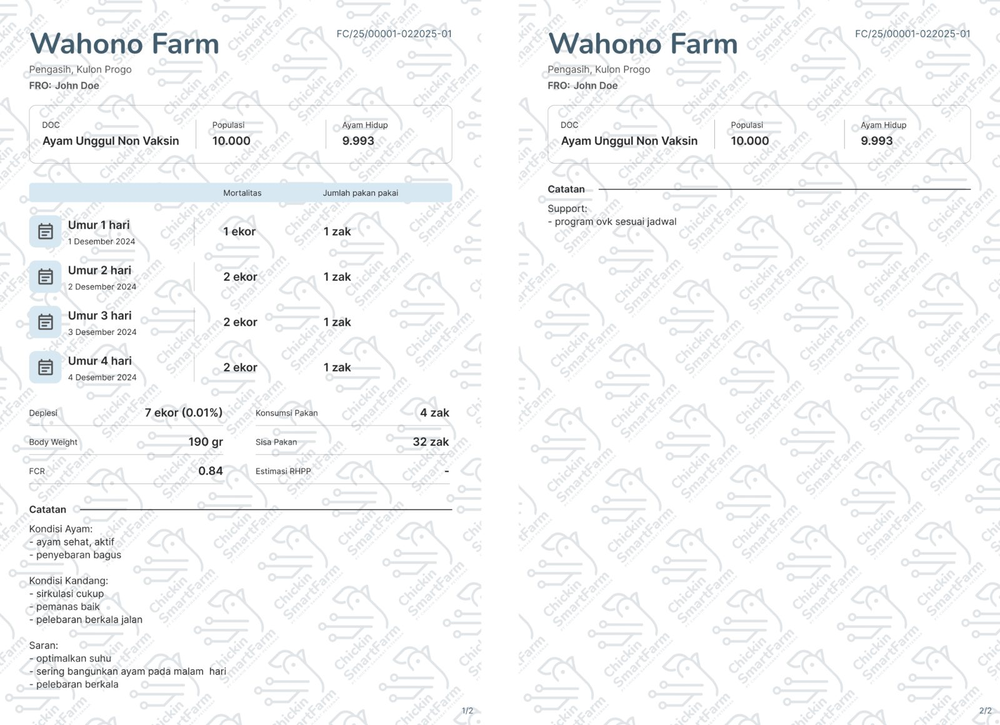

Daily farm reports, typed by hand into WhatsApp.
Field officers (PPL) at Chickin Smartfarm monitor poultry farms and report daily performance metrics such as feed usage, mortality rate and weight gain to both their unit head and the farmers. Previously, these reports were created manually and sent via WhatsApp, leading to data inaccuracies and wasted time.
I was responsible for designing a faster, more reliable way for PPLs to share performance reports directly from the Chickin app, minimizing manual errors and improving data consistency.
A day in the life of a field officer.
I conducted research by following the PPLs' daily activities on site. These are the activities that fill a single farm visit:




Reporting was the last chore of a long visit.

From observations and interviews, we found the key problems of this case:
Put sharing where the data already is.
The new Share Performance feature starts with one “Bagikan” button on the Data harian tab, next to the daily entries PPLs already fill in during a visit. There is no new screen to learn: the report starts from the data they just entered, instead of being retyped into WhatsApp.

Choose the days, send to any app.
Each daily entry gets a checkbox, with “Pilih semua” for the whole period. The header counts what is selected, and the share button only becomes active once something is picked. The last step opens the phone’s share sheet (WhatsApp, Telegram and more), so reports still reach people where they already talk.

Let the system do the math.
The generated report puts the farm, location and field officer at the top, then mortality and feed use per day. Totals such as depletion, body weight, FCR and remaining feed are calculated by the system, and notes on the chickens and the coop close the page. Every farm’s report follows the same layout, so unit heads and farmers read it the same way.

Less typing, fewer mistakes.
“Field officers don’t need more screens. They need a smoother way to do the same job with less friction.”
Designing for Chickin taught me the value of understanding the context of use.